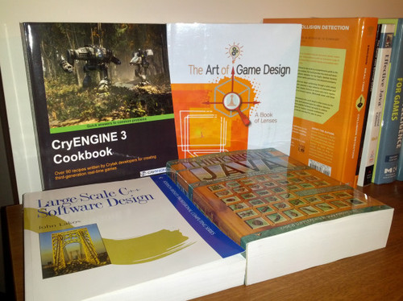
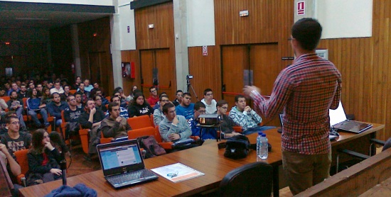

Dec 22, 2012 · 4 minute read · Comments
ComputingGames development
A friend recently asked me about which either general or games specific programming books would I recommend. The true and legendary must read. I answered him directly as I was feeling lazy about posting a comment on each one of them but here I am now. Nevertheless, before going straight to the list, please bare in mind that just like any other best of [insert year here] collection, this is simply a matter of opinion. Not every book is necessarily suitable for everyone at any given time.
Effective C++
Provided you already know how to code in C/C++ reasonably well, this is the book you should be looking at. Proficiency is in the details and you want to get better, don’t you? Structured in small pieces of advice, makes it highly entertaining and almost hides the complexity of the dense topics it covers. Contents range from subtle language details to design gems and wise use of OOP, it has a little bit of everything and I love it. The best non basic C++ book I have ever read, absent doubt.
If you want to go further, More Effective C++ and Effective STL are worth checking out as well.
Design Patterns
I read this one a few years ago and it has proven itself most helpful since then. It is the classic patterns book, elegantly designed solutions to common problems. Singleton, facade, factory and all their friends are explained by presenting a real life problem, discussing a few alternatives to finally come up with a beautiful approach to solve it. Patterns are widely used in companies and, I believe knowing how to employ them wisely is paramount to be a good coder. As it is also an item structured book, it becomes quite accessible and allows being used as a consult source.
Game Engine Architecture
Personally, I consider it the ultimate game programming Bible. Brilliantly written by a Naughty Dog coder, it goes through every single component a decent game engine has. Input, rendering, collision detection, AI, networking and many others are there. Not only it explains what every subsystem does and a few ways of implementing each one of them, it also details how subsystems cooperate to achieve the bigger goal. Even though it does not provide an excessive amount of sample code, it hints enough so a mere commoner coder like me can implement stuff and feel fairly smart afterwards.
However, I would not recommend it as a first contact with game development, being so massive and detailed, it can blow any newcomer’s mind.
Game Programming Gems
This one is actually a series of books, very well known if I may add so it will not strike you as a surprise. Each issue is made of several articles written by industry professionals on themed blocks. I read a few when I was a complete noob so my ability to absorb knowledge from them was quite limited to put it nicely. As opposed to Game Engine Architecture, which scratches the surface of many topics, these texts are highly specific and therefore, recommended for medium to advanced programmers. This is the real deal, profusely tested and used in tangible projects.
Artificial Intelligence for Games
Want to learn about game AI? Search no more because this is it. Very few books start covering the very basics about an artificial intelligence system and end up explaining quite advanced stuff such as space partitioning, hierarchical path finding and machine learning. Even though it warms up with a friendly vision of how AI systems are designed and layered, it turns to be absolutely right and precise. Movement, physics, steering behaviors, state machines, high level strategies, decision making, you name it, the book explains it in plain English and easy to digest Python like pseudo-code.
I read it from cover to end only to find out later that it was going to be the course book for the AI module I took in Kingston University.
Currently I am reading through Large Scale C++ Software Design and it seems like a strong candidate for this list. I will probably write my impressions on it in the near future.

Nov 30, 2012 · 1 minute read · Comments
Games development
I’ve recently been to Spain, not only to spend some quality time with family and friends but to deliver a presentation at my home University. It was basically about how the Games Industry work, how we make games at Crytek UK and what should a Computing Science student do in order to find a job in such a field. Anyways, it was quite nice coming back to where all this began and I"d like to thank my professor Manuel Palomo for making this possible.

To be honest, it shocked me to see a conference room full of people with even some crazy individuals standing at the back to listen to whatever nonsense I had to say. I got some positive feedback in person and over Twitter so that made me quite happy and stop thinking I bored everyone to death.
I’ve been asked several times if it was possible to share the slides and after getting my bosses approval here they are. I guess they lose part of the charm without the talking part but hey, it’s better than nothing isn’t it?
Nov 7, 2012 · 3 minute read · Comments
Games development
Update: the system had been moved into the official libgdx repository as an extension but then it was removed. Gleed doesn’t support basic features such as relative paths for textures.
I"m happy to announce that I’ve made my first contribution to a relatively big open source project. I feel honoured to contribute to the brilliant libgdx framework with these humble loader and renderer for GLEED2D levels. Hold on, what the hell is that? Please, read on.
About GLEED
GLEED2D is a non tiled based open source general purpose level editor. You can place textures and shapes, rotate and scale them. As usual, elements are laid in layers and it is also possible to add custom properties which makes it adequate for all kinds of purposes. Level are saved in an easy to parse XML format. It’s based on XNA 3 but XNA 4 and Mono versions are on the works. What’s good aboutGLEED2D is that it allows you to create smooth levels in a very nice way. Shapes can be used to define collision areas, triggers and so on.
This means you can set a few rules and conventions of your own and be able to fire up scripts, set the player spawn point and all sorts of level design sweetness.

Features
- Full XML GLEED2D spec: layers, custom properties, textures, shapes (circle, rectangle, polygon), visibility, color tints…
- Transforms: object positioning, rotation and scaling.
- LevelRenderer class with frustum culling
- AssetManager integration through the LevelLoader class
- Use multiple Texture files or a single TextureAtlas for performance gain.
Possible improvements
- Make the renderer use a SpriteCache (tricky due to texture rotation)
- Create a JSON exporter and loader for performance gain
- Load levels without using the AssetManager? Some people don’t use it but they really should since levels tend to be heavy to load
- Suggest more!

Usage
When creating the level you need to specify the textures root folder or atlas file as a top level custom property:
- If using individual textures create the “assetRoot” property
- If using an atlas create the “atlas” property
// Set loader in the Asset manager
m_assetManager.setLoader(Level.class, new LevelLoader(new InternalFileHandleResolver()));
...
// Tell the manager to load the level
m_assetManager.load("data/braidtest.xml", Level.class);
...
// When it's ready, fetch the level and create renderer
m_level = m_assetManager.get("data/braidtest.xml", Level.class);
m_levelRenderer = new LevelRenderer(m_level, null, Game.mpp);
...
// Render all layers
m_levelRenderer.render(m_camera);
However, if you get lost, there are Javadoc comments everywhere in the code.
Where do I get it?
It should be soon in the libgdx nightly builds but if you"re really eager to use it and can’t wait any longer (seriously?) you can go to the libgdx repository and find it in the extensions section. Remember to leave some feedback of any flavour: rotten tomatoes, rocks and so on and so forth.
Nov 5, 2012 · 1 minute read · Comments
Projects

I’ve been a busy bee lately but here it comes yet another post with a piece of not so relevant news related to my projects.
Even though I’ve always been kind of sceptical about GitHub, I’ve finally decided to migrate most of my projects. After getting a bit deeper into the libgdx community over there, I’ve come to see the benefits of this self proclaimed social coding platform. Forking, pulling and giving/receiving feedback is easy and motivating (kind of a must when working on side projects). This way I"ll also force myself to use Git, which is full of love and we"re here to learn aren’t we?
I’ve successfully exported the following projects, now available from my profile:
In order to carry out the migration whilst keeping the full commit history I’ve used svn2git. It’s just a ridiculously easy to use Ruby script built upon the git svn tool. I could write a post on how to do it, but it"d be pointless since it’s very well detailed in the project’s readme.
Expect updates soonish!
Sep 18, 2012 · 1 minute read · Comments
Games development

Ludum Dare #24 voting round is over and Evolution – The Survival of the fittest did… Okey. To be honest, this doesn’t come as a surprise at all if you look at the postmortem I posted right after the jam ended. Here are the results for my entry.
- Graphics: 3.84 #87
- Humor: 2.62 #201
- Audio: 2.68 #272
- Mood: 2.67 #352
- Theme: 2.63 #469
- Fun: 2.21 #619
- Overall: 2.45 #628
- Coolness: 40% #719
- Innovation: 1.56 #755
I’m happy to have done well in graphics because I put a lot of effort into making something visually appealing, I obviously wasted too much time on that though, people didn’t like how it played. My lowest score actually goes to the Fun category… What’s the point of making games if they’re not fun to play? I most definitely will try to learn the lesson towards my next take on Ludum Dare and future projects. After all, it’s all about learning, isn’t it?
On the other side, I was a Ludum Dare virgin until now and ending up in the #620 is not a complete disaster taking into account that there were 1406 submissions.
Anyways, it could have gone better but I’m fairly satisfied. Next time I will aim for a much better submission.